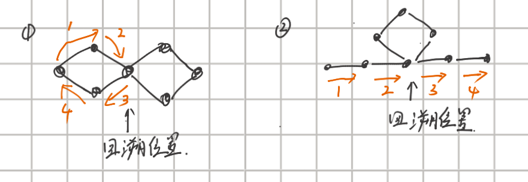

无向图如何判断欧拉路径或者回路是否存在
- 无向图联通
- 无向图所有节点的度为偶数则存在欧拉回路，
欧拉路径有且仅有两个节点度为奇数，剩余全为偶数。
求解欧拉回路或者欧拉路径的思路
如果图中存在环，将环去掉，图依旧能搜索出欧拉路径和欧拉回路，利用这个原理可以求解欧拉回路。不断的求解图中的环，将环去掉，最后组装，得到欧拉回路。
按照上述思路给出欧拉路径求解代码所有
1
2
3
4
5
6
7
8
9
10
11
12
13
14
15
16
17
18
19
20
21
22
23
24
25
26
27
28
29
| void dfs(int x){
int count = 0;
for(int i = 0;i < 58;i++){
if(vis[x][i] == 1 || G[x][i] == 0)
continue;
count++;
vis[x][i] = 1;
vis[i][x] = 1;
dfs(i);
}
ans = char(x + 'A') + ans;
}
int main()
{
int count = 0;
int start_posi = 0;
for(int i = 0;i < n;i++){
if(deg[i] % 2 == 1){
count++;
start_posi = i;
}
}
if(count == 0 || count == 2)
dfs(start_posi);
cout<<ans<<endl;
return 0;
}
|
上述代码注释位置的图解如下： 
可以见到，上述回溯位置之后的路径应该放在答案的结尾，他们找不到下一个可行的边，所以应该放在最后一个位置。所以每次都是在dfs计算完结尾路径之后才将当前位置加入路径。
洛谷P1341
无序字母对
题目描述
给定 \(n\)
个各不相同的无序字母对（区分大小写，无序即字母对中的两个字母可以位置颠倒）。请构造一个有
\((n+1)\)
个字母的字符串使得每个字母对都在这个字符串中出现。
输入格式
第一行输入一个正整数 \(n\)。
第二行到第 \((n+1)\)
行每行两个字母，表示这两个字母需要相邻。
输出格式
输出满足要求的字符串。
如果没有满足要求的字符串，请输出 No Solution。
如果有多种方案，请输出字典序最小的方案（即满足前面的字母的 ASCII
编码尽可能小）。
样例 #1
样例输入 #1
样例输出 #1
提示
不同的无序字母对个数有限，\(n\)
的规模可以通过计算得到。
1
2
3
4
5
6
7
8
9
10
11
12
13
14
15
16
17
18
19
20
21
22
23
24
25
26
27
28
29
30
31
32
33
34
35
36
37
38
39
40
41
42
43
44
45
46
47
48
49
50
51
52
53
54
55
56
57
58
59
60
61
62
63
64
65
66
67
68
69
70
71
72
73
74
75
76
77
78
79
80
81
82
83
84
85
86
87
88
89
90
91
92
93
94
95
96
97
98
99
100
101
102
103
|
#include<bits/stdc++.h>
using namespace std;
#define ll long long
#define lll __int128
#define DEBUG0
const int mod1 = 1e9 + 7;
const int mod2 = 998244353;
const int maxx = 1e5 + 10;
int vis[58][58],G[58][58];
int to[maxx];
int next_[maxx];
int head[58],tot;
int fa[58],have_one[58],deg[58];
void init()
{
memset(head,-1,sizeof(head));
memset(have_one,-1,sizeof(have_one));
tot = 0;
}
int find_fa(int a){
if(fa[a] == a)return a;
return fa[a] = find_fa(fa[a]);
}
void merge(int x,int y){
int fa_x = find_fa(x),fa_y = find_fa(y);
if(fa_x != fa_y)fa[fa_x] = fa_y;
}
void add_edge(int a,int b)
{
merge(a,b);
deg[a] ++;
deg[b] ++;
have_one[a] = 1;
G[a][b] = 1;
G[b][a] = 1;
}
string ans;
void dfs(int x){
int count = 0;
for(int i = 0;i < 58;i++){
if(vis[x][i] == 1 || G[x][i] == 0)
continue;
count++;
vis[x][i] = 1;
vis[i][x] = 1;
dfs(i);
}
ans = char(x + 'A') + ans;
}
int main()
{
int n, min_val = 100;
init();
cin>>n;
for(int i = 0;i < n;i++){
char temp[3];
scanf("%s",temp);
add_edge(temp[0] - 'A',temp[1] - 'A');
add_edge(temp[1] - 'A',temp[0] - 'A');
min_val = min(min_val,temp[0] - 'A');
min_val = min(min_val,temp[1] - 'A');
}
int fa_temp = find_fa(min_val), flag = 0,flag1 = 0;
for(int i = 0;i < 58 && flag == 0;i++){
if(have_one[i] == 1){
if(((deg[i] / 2) % 2) == 1){
flag1 += 1;
if(flag1 == 1)min_val = i;
};
if(find_fa(i) != fa_temp)flag = 1;
}
}
if(flag == 0 && (flag1 == 0 || flag1 == 2)){
dfs(min_val);
cout<<ans<<endl;
}
else cout<<"No Solution"<<endl;
return 0;
}
|